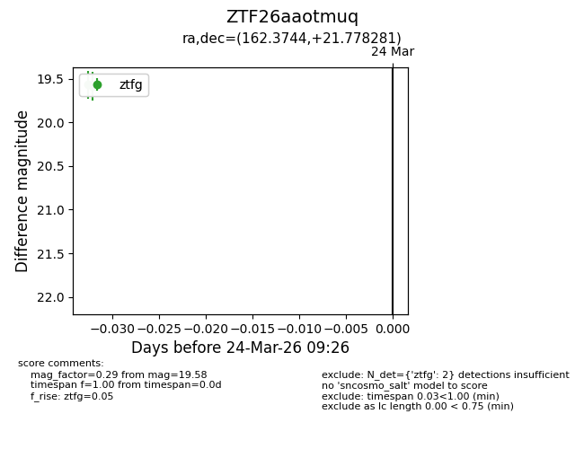
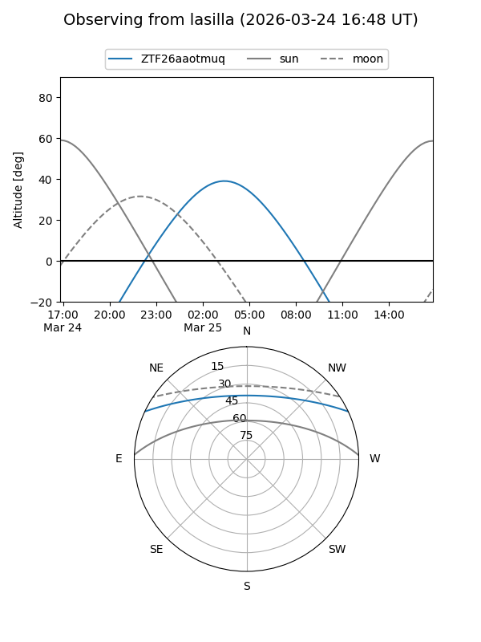
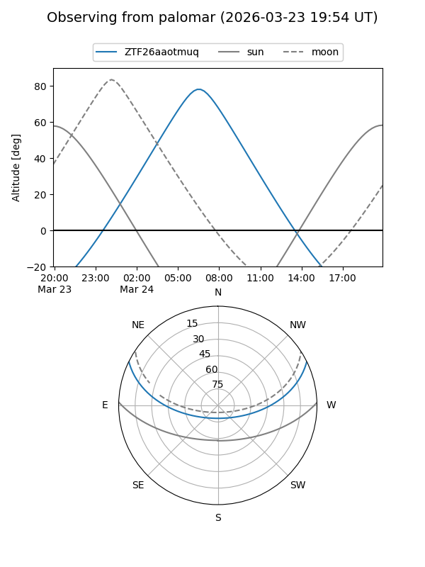

ZTF26aaotmuq
Target ZTF26aaotmuq at 2026-03-24 09:28
Aliases and brokers:
FINK: link
Lasair: link
ALeRCE: link
alt names
ZTF26aaotmuq (ztf,fink_ztf)
Coordinates:
equatorial (ra, dec) = 162.3744,+21.77828
equatorial (HMS+DMS) = 10:49:29.86,+21:46:41.81
galactic (l, b) = (217.1449,+61.81101)
Flags:
Photometry:
last ztfg=19.58
2 ztfg detections
Lightcurve

Visibility


Additional plots